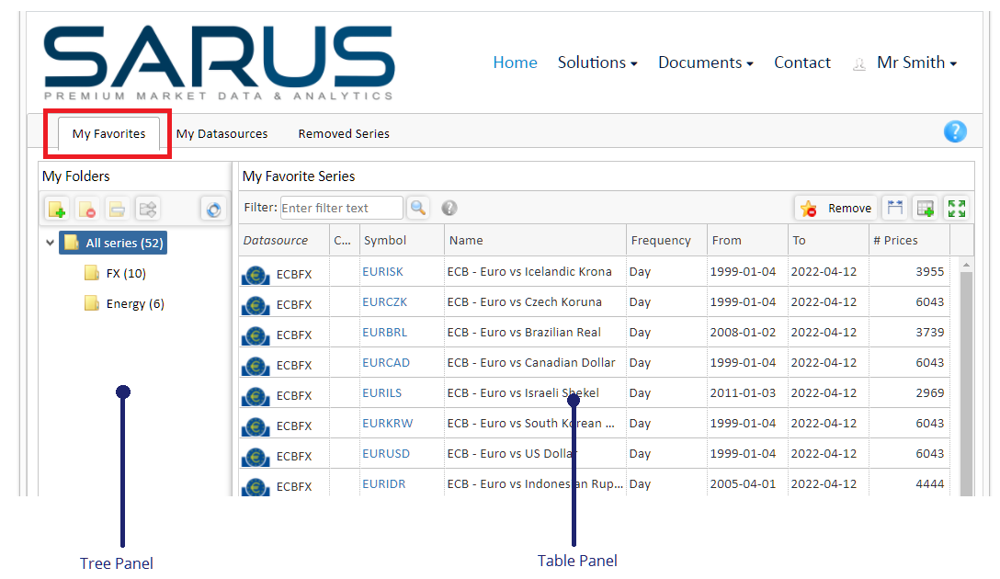
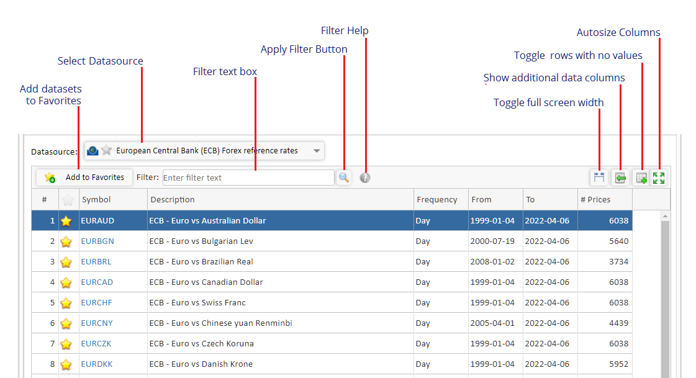
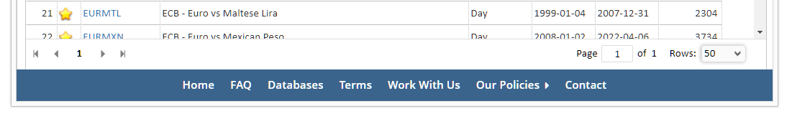
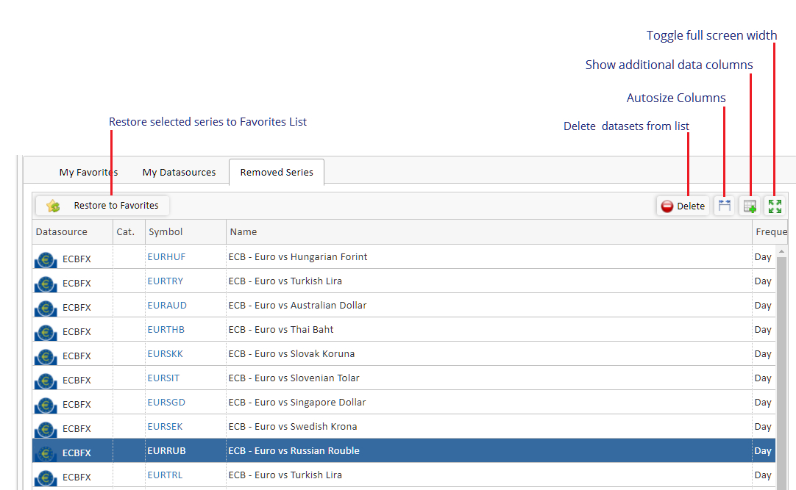

Managing your Favorites List
Each user has access to their own list of frequently used time series (datasets) called a 'Favorites List'. The list is controlled and managed from the 'My Favorites' web page on www.sarus.com. The help page below has three tabs similar to the ones on the 'My Favorites' web page.
The three tabs are:
- My Favorites - where users can manage their list and view or remove series.
- My Datasources - where series are added to the Favorites List.
- Deleted Series, where previously deleted series are restored to the Favorites List.
Click on one of the three tabs below to see the help for that tab.
The My Favorites tab has a Tree Panel on the left, a splitter bar and a Table Panel on the right. Both panels have toolbars and popup menus.

The Tree Panel
The Tree Panel on the left allows users to create a hierarchical tree structure to organize their favorite series as folders in the tree.
Folders and subfolders can be created, moved and deleted (when empty).
Series from the Table Panel can be dragged or pasted to any Tree Panel folder.
Click on any Tree Panel folder to display its series in the Table Panel.
Click on the 'All Series' folder displays all series in the Favorites List.
The popup menu is activated by right clicking in the Tree Panel.
Notes
- Each folder name shows the number of series it contains.
- Series from the Table Panel can be duplicated in multiple folders.
- Folders can be nested and contain both series and sub-folders.
- Folder moving (when enabled) allows folders to be reorganized in the Tree Panel.
The Table Panel
The Table Panel contains the list of favorite series (datasets) that the user has
selected for easy access on a day to day basis.
From here the historical values and metadata for any series can be viewed and charted, series added to a
folder in the Tree Panel or series can be removed from the Favorites List.
See the 'My Datasources' tab above for details on how to add series to the Favorites List.

Filter Series
Use the toolbar Filter edit box to list in the Table Panel only series containing (or excluding) certain words or phrases. Phrases are a list of words contained in double quotes.
To exclude a word or phrase, prefix it with a minus “-“ character. Filters are NOT case sensitive.
Click on the small Help button (“?”) that beside the Filter Text box for more
details on filters.
To activate a filter, press the enter key when in the Filter edit box or click the toolbar
“Apply Filter” button.
Tree folders can be used with a filter and series can be sorted by
clicking on a "Table Panel" column header.
View a Series
Series values, corrections and metadata can be viewed in a new browser tab by clicking on a symbol in column two, the 'Symbol' column.
On the Series Viewer page, the values of all data columns can be viewed in any average and charted.
Empty rows can be hidden, weekends toggled, data exported
and any published data corrections displayed.
Remove Series
Selected series are removed from the 'Favorites List' using the “Remove” button on the table
toolbar (or from the popup menu).
Removed series are only removed from the favorites list and can be added again (click
the 'Removed Series” tab above for details).
All removed series are automatically removed from any
Tree Panel folders. Multiple series can be selected and removed at once.
Add Series to a Tree Panel folder
The Favorites Tree makes it simple to locate series as they can be
organized into user defined folders. Select one or more series in the Table Panel (multiple series can be
selected using the shift or Ctrl keys) and the selected series can be
dragged onto any Favorites Tree folder.
Alternatively, use the popup menus to copy from the Tree Panel and paste onto a folder in the Tree panel.
The series are added to the selected folder and the folder caption will be updated to show the new series count.
Here series can be added to the Favorites List or viewed in a new 'Series Viewer' browser tab.
The tab has a toolbar and popup menu that is opened by right clicking the mouse in the table.
Data Categories:
Some datasources have their series divided into data categories. These datasources will
have a Category Panel on the left of the Table Panel containing
Category Tree and Category List tabs.
In the Category Tree tab, categories are displayed in a vendor supplied tree, Only the categories that
the user can have access to are enabled. All other categories are greyed out.
In the Category List, a sorted list of categories is displayed. Again, only the categories that the user can access are enabled. Click on the the 'Only My Datasources' checkbox to see only categories that can be accessed.
Click on a category name in the tree or list to display the series from the selected data category.
Select Datasource
The 'Select Datasource' dropdown is used to select a datasource from those that are available with the current subscription. Once selected, the Table Panel will update to display the series the datasource contains. For large datasources, a page counter will appear below the table where users can set the number of rows per page and navigate directly to any page.
Filter Series
Use the toolbar Filter edit box to list in the Table Panel only series containing (or excluding) certain
words or phrases. Phrases are a list of words contained in double quotes.
To exclude a word or phrase,
prefix it with a minus “-“ character. Filters are NOT case sensitive.
Click on the small Help button (“?”) that beside the Filter Text box for more
details on filters.
To activate a filter, press the enter key when in the Filter
edit box or click the toolbar
“Apply Filter” button.
.
Adding Series
Select one or more series in the Table Panel (multiple series can be selected using the shift or Ctrl keys) then click the the “Add to Favorites” toolbar button ( or right click to use the popup menu) to add them to the Favorite List. A yellow star will appear in column two beside each of the added series to indicate that the series are now active and have been added to the bottom of the Favorites List.
View a Series
Series values, corrections and metadata can be viewed in a new browser tab by
clicking on a symbol in column two, the 'Symbol' column.
On the Series Viewer page, the values of all data columns can be viewed in any average and charted. Empty rows can be hidden,
weekends toggled, data exported and any published data corrections displayed.
Remove Series
To remove series from the Favorites List, first select one or more series in the Table Panel (multiple series can be selected
using the shift or Ctrl keys). Selected series are removed using the 'Remove from Favorites' popup menu option.
Removed series are only removed from the favorites list and can be added again from the
'Removed Series' tab.
All removed series are automatically removed from any tree
folders.
Series that were recently removed from the Favorites List are displayed here.
To restore series to the Favorites List, first select one or more series (multiple series can be selected using the shift or Ctrl keys)
then click the “Restore to Favorites” button. Restored series are removed from the table and added to the bottom of the Favorites List
(see the 'My Favorite Series' tab).
Series can be deleted from this table by clicking the 'Delete' toolbar button.
A popup menu with the same functionality is available by right clicking in the table.

If you have any questions about this page or would like a about our products and services then please get in touch using the button below.
Sarus Systems provides low cost premium market data & analytics giving companies greater market insight and competitive advantage.
(c) 2000-2022 Sarus Systems Ltd. Sarus, Monitor+ and XLerate are trademarks of Sarus Systems Ltd. All trademarks acknowledged.